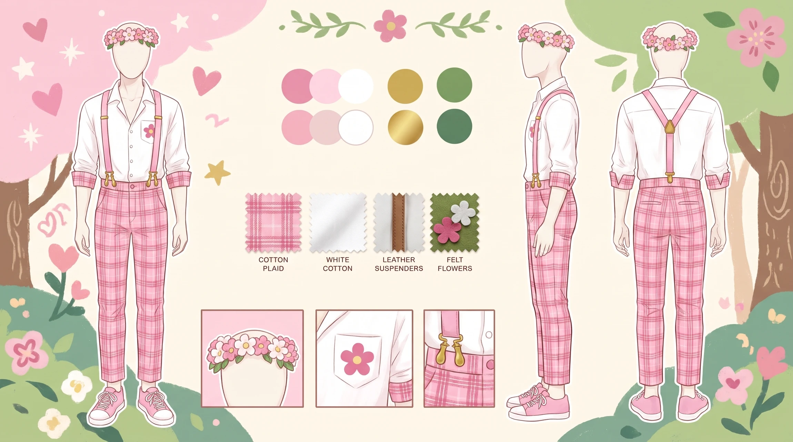
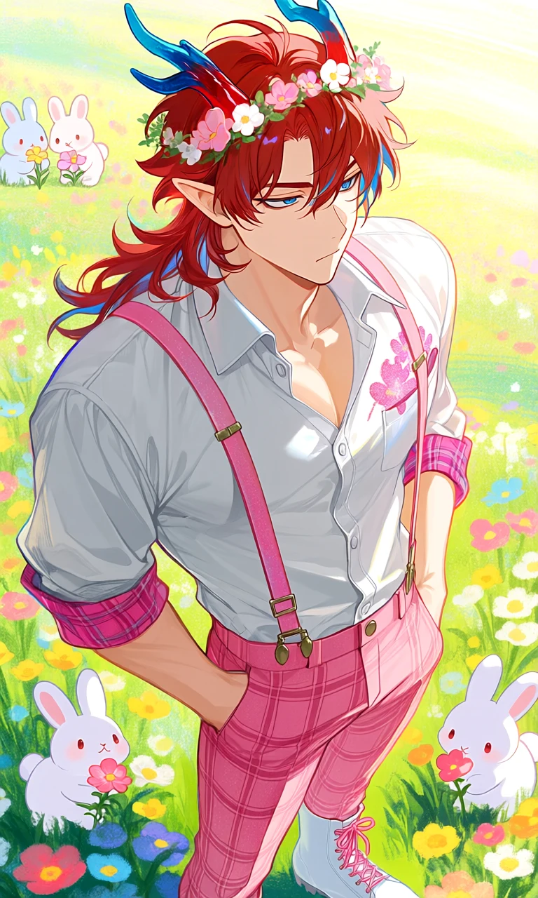
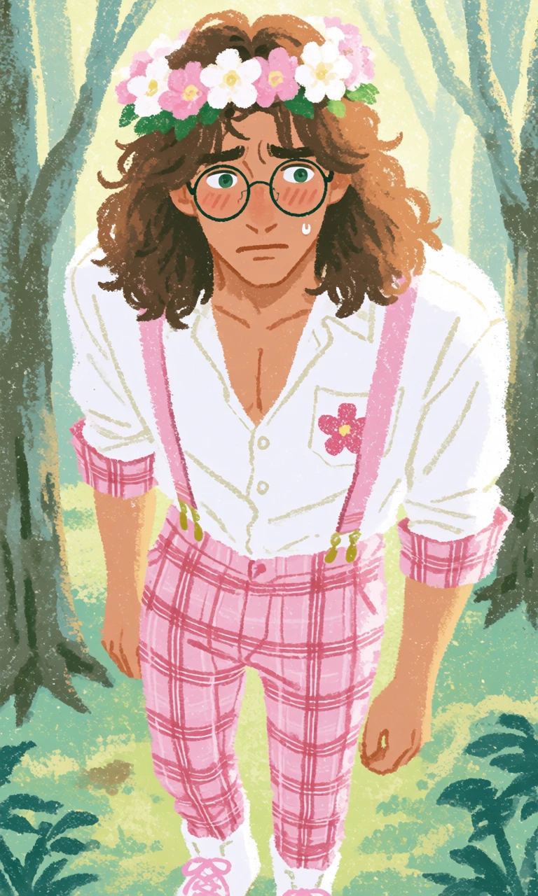

Posies & Plaid

Outfit Prompt
He is wearing a white button down shirt that has the top buttons unbuttoned to show off a little bit of his chest, his shirt has a glitter pink flower print on the pocket. His sleeves are rolled up a bit showing off the pink plaid lining. He is wearing pink plaid pants and pink suspenders. He is wearing white boots with pink shoe laces. He is wearing a crooked pink and white flower crown.
Outfit Examples



